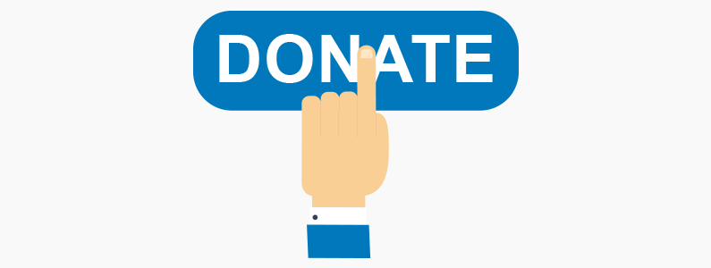

<div class="about-container">
  <div class="about-section">
    <div class="donate-img">
      
    </div>
  
  <p><span class="logo">EasyDonate</span> is platform that acts as a medium for donations. 
    A donation can be made by any individual for any needful. This platform
    also helps anyone in finding any item that they are looking for or in need of.</p>
    <a routerLink = "/signup">Get started</a>
  </div>
</div>